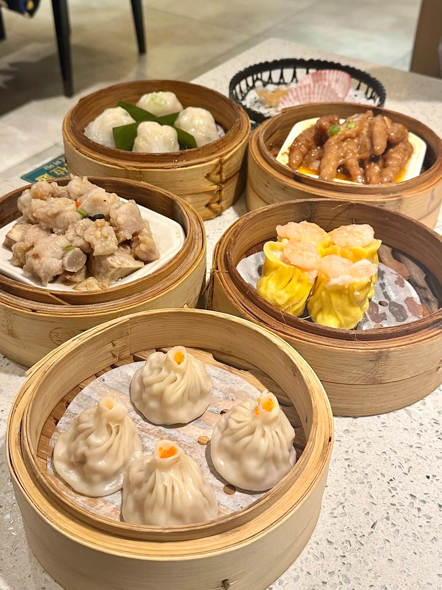
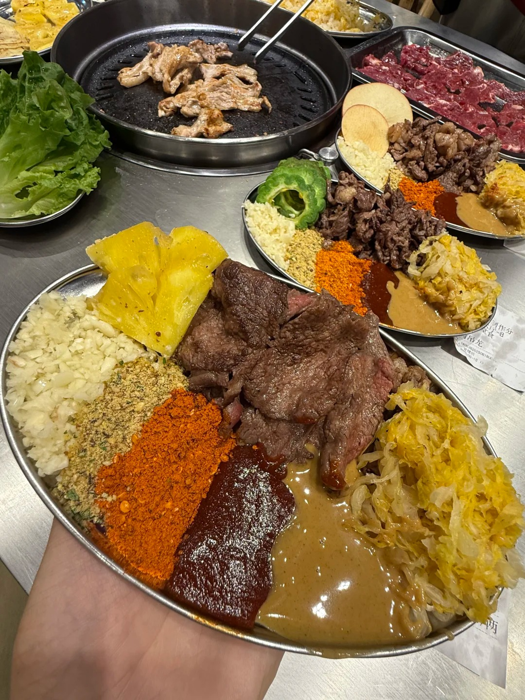
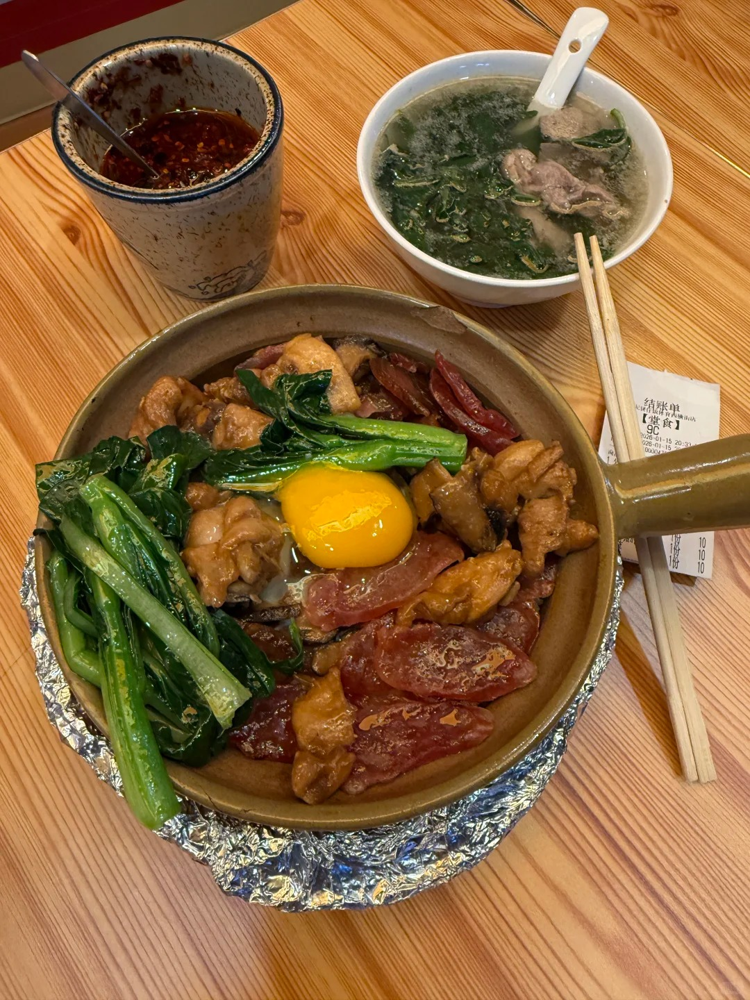
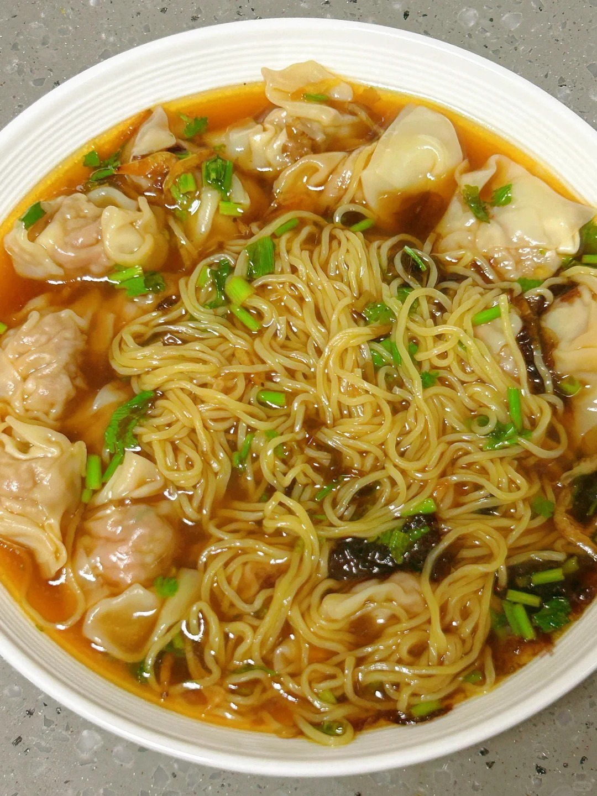

"Eating in Guangzhou" - Welcome to a true paradise for food lovers.
Cantonese cuisine is one of the Eight Culinary Traditions of Chinese cuisine, known globally for its emphasis on preserving the natural flavors of ingredients. From bustling morning tea houses to vibrant night markets, Guangzhou offers an unforgettable gastronomic journey.

Delicate bite-sized portions served in small steamer baskets. Enjoying Dim Sum is an essential part of the morning tradition called "Yum Cha" (drinking tea), deeply woven into the local culture.

Char siu (sweet BBQ roast pork) and roast goose with dangerously crispy skin and tender meat. It is a highly renowned staple of local dining, often served over a bed of fragrant steamed rice.

A classic winter favorite. Premium rice is cooked slowly in a traditional claypot over a charcoal stove, producing an incredibly savory, golden, and crispy crust at the bottom that locals adore.

Springy, thin egg noodles served in a rich, slow-simmered seafood broth featuring plump, hand-wrapped shrimp and pork wontons. A seemingly simple bowl that requires decades of culinary mastery.